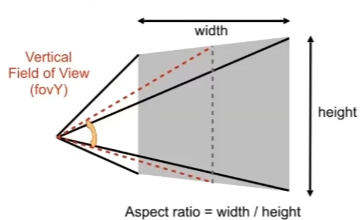

GAMES 101 L04-Transformation Cont.
View / Camera Transformation (ModelView Transformation)
To define a camera, we need 3 variables.
- Position
- Look at / gaze direction
- Up direction (assuming perpendicular to )
For convenience, we always consider the camera to the origin, up at Y, look at -Z. And Transform the objects along with the camera. We define a matrix to transform the camera (at any possible positions) to our default state as described above.
in math:
- Translate e to origin
- Rotate g to -Z
- Rotate t to Y
- Rotate to X
As shown in the figure below, since rotate a random axis to x/y/-z can be complex, we can first get the inverse matrix. Then since the rotation matrix is orthogonal matrix, its transpose matrix equals its inverse matrix. So we can easily get the rotation matrix we need.

Projection Transformation
Two projections
- Prospective projection （透视投影）(causes “near big far small” phenomenon)
- Orthographic projection (正交投影) (suppose the camera is at infinity)
Orthographic projection
Here, ( because of looking at -Z, also that’s why openGL use left-handed coords).
To do so,
- Center the cuboid by translating.
- Scale into canonical cube.
In math orthographic projection matrix can be wriiten as:
Perspective projection
- Further objects are smaller
- Parellel lines are not parellel; converge to a single point
We first convert perspective projection to orthographic projection, then perform orthographic projection.
. More detailed explanations see https://www.zhyingkun.com/perspective/perspective/.
To define the optic cone for perspective projection, we only need two factors: aspect ratio and fov.

The l, r, b, t previous mentioned in the orthographic projection can be calculated based on aspect ratio and fov. Here, |n| refers to the distance to the near plane.
Summary of MVP
-
Model Transformation
Purpose: Positions objects in the world. Transforms vertices from the object’s local space (model space) to world space.
Typical operations:
Translation (moving the object).
Rotation (rotating the object).
Scaling (resizing the object).M = T⋅R⋅S
where T is translation, R is rotation, and S is scaling. -
View Transformation
Purpose: Positions the camera and orients it in the scene.
Transforms vertices from world space to camera space (or view space), as if the camera is at the origin.V = Inverse of camera transformation matrix
-
Projection Transformation
Purpose: Projects 3D points in camera space onto a 2D plane (screen space).
Converts vertices from camera space to clip space.
Two types of projection:
Orthographic Projection: Preserves sizes and parallel lines (used for CAD, 2D games, etc.) (cuboid to canonical cube ).
Perspective Projection: Mimics how the human eye sees, with objects farther away appearing smaller (frustum to canonical cube).
Example: Maps a frustum (a truncated pyramid for perspective projection) or a box (orthographic) onto the normalized device coordinates (NDC).P = Projection matrix
About NDC
-
Range:
Coordinates are confined to a canonical cube: x, y ,z are in the range
[−1,1]. After projection, this range represents the visible portion of the scene. -
Purpose:
To standardize the coordinate space, regardless of the screen resolution or the aspect ratio of the viewport. Simplifies clipping and culling operations since only coordinates inside
[−1,1]in all three dimensions are visible. -
Coordinate Meaning:
x and y determine the 2D position on the screen relative to the viewport. z represents depth information, often used for depth testing to resolve which objects are in front of others.
Final Transformation
The combined transformation matrix MVP is:
MVP = P⋅V⋅M
Applied to vertex coordinates v (in homogenous coordinates):
v’ = MVP ⋅ v
After applying MVP:
- The coordinates are in clip space.
- Clip space coordinates are divided by their w-component to normalize them, resulting in NDC.
- Finally, NDC is mapped to screen space using the viewport transformation.
What’s after MVP?
Canonical Cube to Screen
Screen:
- an array of pixels (pixel is short for picture element)
- size of the array - resolution
- a typical kind of raster display
Raster
- rasterize == drawing onto the screen
Screen Space (屏幕空间)
Here the definition is slightly different from the tiger book. Pixel (x, y) is centered at (x+0.5, y+0.5)
- Irrelevant to z
- Transform in xy plane:
- Viewport transform (视口变换) matrix:
In fact, here we assume the viewport’s left-bottom is (0,0). More generally, our viewport matrix can be constructed according to the function below.
1 | |